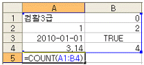
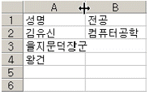
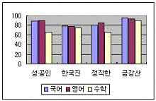
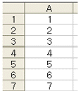
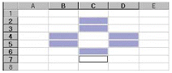
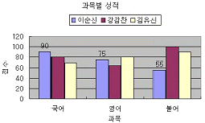
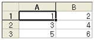
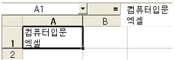
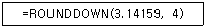

컴퓨터활용능력-3급(폐지) (2011-03-20 기출문제)
1과목: 컴퓨터 일반
1. 다음 중 HTML에 관한 설명으로 옳지 않은 것은?
- 웹(Web) 상에서 볼 수 있는 문서를 만들기 위한 표준 언어이다.
- SGML이라는 국제 전자문서 표준을 기반으로 만들어진 언어이다.
- 기존의 언어와는 달리 태그(Tag)를 사용하지 않는다.
- 파일 확장자로 htm이나 html을 갖는다.
(정답률: 68%)

2. 다음 중 압축 파일을 사용하는 이유로 옳지 않은 것은?
- 프로그램의 실행속도가 빨라진다.
- 파일 전송에 유리하다.
- 보조기억장치의 용량을 효율적으로 사용할 수 있다.
- 파일의 복사, 백업 시 속도가 빠르다.
(정답률: 64%)
3. 다음 중 한글 Windows XP가 시작할 때 자동 실행되는 프로그램을 수정할 수 있는 대화상자로 옳은 것은?
- [시스템 구성 유틸리티] 대화상자
- [디스플레이 등록 정보] 대화상자
- [시스템 등록 정보] 대화상자
- [레지스트리 편집기] 대화상자
(정답률: 49%)
4. 다음 중 인터넷 서비스가 아닌 것은?
- WWW
- Telnet
- FTP
- URL
(정답률: 55%)
5. 다음 중 한글 Windows XP에서 문제가 발생하여 안전모드로 재부팅하려고 할 경우에 재부팅 초기에 [부팅 메뉴]를 호출하는 키로 옳은 것은?
- <Esc>
- <Alt> + <F4>
- <Alt> + <Tab>
- <F8>
(정답률: 65%)
6. 다음 중 휴대용 컴퓨터의 종류가 아닌 것은?
- 팜톱(Palmtop)
- 워크스테이션(Workstation)
- 노트북(Notebook)
- 태블릿 PC(Tablet PC)
(정답률: 70%)
7. 다음 중 안전 모드로 부팅할 때 적용되는 모니터의 해상도는 어느 것인가?
- 1024×768
- 640×480
- 1280×1024
- 800×600
(정답률: 64%)
8. 다음 중 컴퓨터의 특징을 나타내는 것과 거리가 먼 것은?
- 정확성
- 대량성
- 범용성
- 창조성
(정답률: 72%)
9. 다음 주변장치 중에서 성격이 다른 것은?
- 마우스
- 디지타이저
- 모니터
- 스캐너
(정답률: 59%)
10. 다음 중 인터넷을 이용하여 컴퓨터 통신을 하려고 할 때 전송할 데이터를 일정한 길이로 묶어서 분할한 데이터의 단위를 의미하는 것으로 옳은 것은?
- 스팸(Spam)
- 프로토콜(Protocol)
- 패킷(Packet)
- 셀(Cell)
(정답률: 64%)
11. 다음 중 RAM(Random Access Memory)에 대한 설명으로 옳지 않은 것은?
- DRAM과 SRAM으로 분류된다.
- 전원이 꺼지면 기억된 내용이 모두 사라지는 휘발성 메모리이다.
- 현재 사용 중인 프로그램이나 데이터가 저장되어 있다.
- 주로 입출력 시스템(BIOS), 글자 폰트, 자가 진단 프로그램 등이 저장되어 있다.
(정답률: 52%)
12. 다음 중 플러그 앤 플레이(plug and play)에 대한 설명으로 옳지 않은 것은?
- 컴퓨터에 주변기기를 추가할 때 별도의 설정을 하지 않아도 그대로 사용할 수 있도록 하는 기능이다.
- 플러그 앤 플레이 기능을 사용하기 위해서는 운영체제, 주변기기, 바이오스 프로그램 등에서 모두 지원해야 한다.
- 전원을 켠 상태에서도 새로운 장치를 추가할 수 있는 기능을 핫 플러그라 한다.
- 시스템에 업데이트가 필요할 경우 자동으로 업데이트 파일을 다운로드한 후 업데이트할 것인지 물어보는 기능이다.
(정답률: 50%)
13. 다음 중 운영체제의 역할로 옳지 않은 것은?
- 중앙처리장치 관리
- 기억장치 관리
- 입출력장치 관리
- 응용 프로그램 작성
(정답률: 70%)
14. 다음 중 한글 Windows XP에서 파일이나 폴더의 이름 바꾸기에 대한 설명으로 옳지 않은 것은?
- ?c / * ? " 같은 문자를 이름으로 사용할 수 있다.
- 다른 아이콘과는 달리 '휴지통'에 대해서는 일반적으로 '이름 바꾸기'를 실행할 수 없다.
- Windows 탐색기에서 이름을 바꾸고자 하는 폴더를 선택한 후 [파일]-[이름 바꾸기]를 실행한다.
- 이름을 바꾸고자 하는 폴더를 선택한 후 마우스 오른쪽 버튼을 눌러 [이름 바꾸기]를 실행한다.
(정답률: 71%)
15. 다음 중 한글 Windows XP에서 Windows 탐색기에 대한 설명으로 옳지 않은 것은?
- 컴퓨터 파일과 폴더를 계층 구조로 표시한다.
- 폴더 이름 좌측의 '+' 표시는 하위 폴더까지 표시된 상태임을 의미이다.
- 상태 표시줄에는 폴더 내의 총 개체수, 디스크 여유 공간, 선택된 파일 크기 등이 나타난다.
- 폴더 영역과 파일 영역 크기를 변경하려면 두 영역을 분리하는 막대를 좌우로 드래그하면 된다.
(정답률: 57%)
16. 다음 중 컴퓨터의 처리 속도 단위에 대한 설명이 옳지 않은 것은?
- ms = 10-3 sec
- μs = 10-6 sec
- fs = 10-9 sec
- ps = 10-12 sec
(정답률: 63%)
17. 다음 중 처리되는 데이터의 종류에 따른 컴퓨터의 분류로 옳은 것은?
- 미니 컴퓨터
- 마이크로 컴퓨터
- 메인 프레임
- 하이브리드 컴퓨터
(정답률: 60%)
18. 다음 중 컴퓨터의 보조기억장치로 옳지 않은 것은?
- 캐시 메모리
- DVD
- USB 메모리
- 자기 테이프
(정답률: 55%)
19. 다음 중 전자우편(E-mail)에서 메일을 발송할 때 사용하는 프로토콜로 옳은 것은?
- SMTP
- POP3
- MIME
- FTP
(정답률: 57%)
20. 다음 중 한글 Windows XP에서 인쇄 작업에 대한 설명으로 옳지 않은 것은?
- 기본 프린터란 특정 프린터를 지정하지 않고 인쇄명령을 내릴 경우 자동적으로 작업을 수행하는 프린터를 말한다.
- 기본 프린터는 두 개 이상 지정할 수 있다.
- 프린터 추가 마법사를 이용하여 새로운 프린터를 설치할 수 있다.
- 인쇄 대기 중인 문서를 삭제할 수 있다.
(정답률: 69%)
2과목: 스프레드시트 일반
21. 다음 중 수식 입력에서 상대참조를 절대참조로 바꾸기 위하여 사용하는 기능키로 옳은 것은?
- <F2> 키
- <F3> 키
- <F4> 키
- <F5> 키
(정답률: 65%)
22. 일반적으로 차트에서 X축은 항목 축, Y축은 값 축으로 사용되는데 비해 X축을 값 축, Y축을 항목 축으로 사용하는 차트는?
- 세로 막대형 차트
- 원형 차트
- 가로 막대형 차트
- 꺾은선형 차트
(정답률: 59%)
23. 아래의 시트에서 [A5] 셀에 입력된 수식의 결과로 옳은 것은?

- 5
- 6
- 7
- 8
(정답률: 56%)
24. 다음 중 엑셀에서 인쇄에 사용되는 바로가기 키로 옳은 것은?
- <Ctrl> + <P>
- <Ctrl> + <R>
- <Alt> + <P>
- <Alt> + <R>
(정답률: 62%)
25. 다음과 같은 데이터가 입력되어있는 시트에서 열 머리글인 A와 B 사이의 셀 구분선에서 마우스를 더블 클릭했을 때의 실행결과로 옳은 것은?

- [A1]셀의 데이터 길이에 맞게 열 너비가 자동으로 조절된다.
- [A3]셀과 [B3]셀이 자동으로 합쳐진다.
- [A3]셀의 데이터 길이에 맞게 열 너비가 자동으로 조절된다.
- [B1]셀의 데이터 길이에 맞게 열 너비가 자동으로 조절된다.
(정답률: 66%)
26. 아래 차트에서 데이터 계열이나 항목에 할당된 무늬 또는 색을 식별하는 상자의 이름으로 옳은 것은?

- 데이터 테이블
- 항목 축
- 범례
- 계열 축
(정답률: 64%)
27. 다음 시트의 데이터를 이용하여 보기의 수식을 적용했을 때 결과 값이 다르게 나오는 것은?

- =SUM(A1:A3,A7)
- =SUM(A1,A2,A3,A7)
- =SUM(A1:A7)
- =A1+A2+A3+A7
(정답률: 66%)
28. 다음 중 [데이터]-[레코드 관리]에서 실행할 수 없는 작업으로 옳은 것은?
- 신규 레코드의 추가
- 레코드의 수정 및 삭제
- 레코드 찾기
- 삭제된 레코드의 복원
(정답률: 65%)
29. 워크시트 인쇄 시 페이지마다 시트 내에 있는 동일한 제목 행을 출력하기 위한 설정 방법으로 옳은 것은?
- [파일]-[페이지 설정]-[페이지]
- [파일]-[페이지 설정]-[여백]
- [파일]-[페이지 설정]-[머리글/바닥글]
- [파일]-[페이지 설정]-[시트]
(정답률: 45%)
30. [A1]셀의 값이 0보다 크거나 같으면 '양', 0보다 작으면 '음'이라고 나타내는 함수식으로 옳은 것은?
- =IF(A1>=0, "양", "음")
- =IF(A1>0 THEN "양" ELSE "음")
- =IF(A1>0, "양", "음")
- =IF(A1<=0, "양", "음")
(정답률: 63%)
31. 다음과 같이 범위를 설정하고자 할 때 마우스와 함께 이용되는 조합 키로 옳은 것은?

- [Ctrl]
- [Shift]
- [Alt]
- [Tab]
(정답률: 74%)
32. 다음 차트에서 설정되어 있지 않은 구성요소는 어느 것인가?

- 차트 제목
- X(항목) 축 보조 눈금선
- 데이터 레이블
- 범례
(정답률: 60%)
33. 시트의 [A1:B3] 영역에 그림과 같이 숫자를 1, 2, 3, 4, 5, 6 순서로 연속하여 입력하고자 할 때 올바른 방법은?

- [A1:B3]을 선택한 뒤, 숫자 입력 후 [Enter]키 누르기를 반복한다.
- [A1:B3]을 선택한 뒤, 숫자 입력 후 [Tab]키 누르기를 반복한다.
- [A1:B3]을 선택한 뒤, 숫자 입력 후 [→]키 누르기를 반복한다.
- [A1:B3]을 선택한 뒤, 숫자 입력 후 [Shift]키 누르기를 반복한다.
(정답률: 51%)
34. 아래 그림과 같이 [A1] 셀에 두 줄로 자료를 입력하기 위해서 사용하는 키의 조합으로 옳은 것은?

- <Ctrl> + <Enter>
- <Alt> + <Enter>
- <Shift> + <Enter>
- <Alt> + <Page Down>
(정답률: 59%)
35. 다음 중 [인쇄 미리 보기] 메뉴를 선택한 상태에서 조절 할 수 없는 작업은?
- 머리글/바닥글 영역 조절
- 확대/축소 보기
- 행 크기 조절
- 왼쪽/오른쪽 여백 조절
(정답률: 63%)
36. 다음 중 차트 작성 및 변경에 대한 설명으로 옳지 않은 것은?
- 연속되지 않은 영역의 데이터로 차트를 작성하려면 <Ctrl>키를 누른 채 영역을 선택한다.
- 워크시트의 데이터로 만들어진 차트는 워크시트의 데이터가 변하면 차트에 곧바로 반영된다.
- 하나의 데이터 원본으로는 하나의 차트만을 작성할 수 있다.
- 차트를 별도의 차트 시트에 삽입하려면 차트 마법사의 4단계에서 '새로운 시트로'를 선택한다.
(정답률: 61%)
37. 다음 함수식의 실행 결과로 옳은 것은?

- 3.141590
- 3.14159
- 3.1415
- 3.1416
(정답률: 63%)
38. 다음 중 한자와 특수 문자를 입력하는 방법으로 옳지 않은 것은?
- 한자로 변경할 한글을 입력한 후<한자> 키를 누르면 해당 한자 목록이 나타난다.
- 입력한 단어를 한자로 변경할 때는 단어 뒤에 커서를 놓고<F9> 키를 누른다.
- 한글 자음(ㄱ, ㄴ, ㄷ...)에 따라서 화면에 표시되는 특수 문자가 다르다.
- 한글 자음을 입력한 후<한자> 키를 누르면 화면에 특수 문자 목록이 나타난다.
(정답률: 61%)
39. 다음 중 오류값 "#NULL!" 에 대한 설명으로 옳은 것은?
- 교차되지 않는 두 영역의 논리곱을 지정했을 때 발생한다.
- 인식할 수 없는 문자열이 입력된 경우 발생한다.
- 수식에서 셀 참조가 유효하지 않았을 때 발생한다.
- 잘못된 인수나 피 연산자를 사용했을 때 발생한다.
(정답률: 42%)
40. 다음 중 데이터 입력에 대한 설명으로 옳지 않은 것은?
- 숫자와 문자가 혼합된 데이터를 셀에 입력하면 숫자로 인식된다.
- 날짜와 시간을 같은 셀에 입력할 때는 날짜 뒤에 한 칸 띄우고 시간을 입력한다.
- 셀에 데이터를 입력한 후<Shift>+<Enter>를 누르면 셀 포인터가 위쪽으로 이동한다.
- 셀에 날짜를 입력할 때 연도를 입력하지 않으면 자동으로 올해의 연도가 입력된다.
(정답률: 41%)